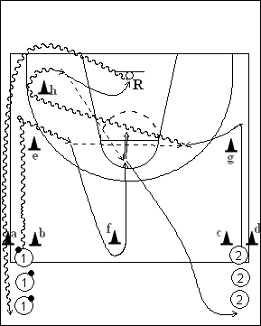

Catégorie : ECHAUFFEMENT (Ech-010)
Déroulement
- Deux files de joueurs aux extrémités de la ligne médiane. Les ballons sont dans la file 1 avant les cônes a et b. La file 2 se trouve avant les cônes c et d.
- Le premier joueur de la file 1 part en dribble, effectue un changement de direction après le cône e et dribble vers la ligne des lancers-francs. Le premier joueur de la file 2 contourne le cône g et reçoit la passe du premier joueur de la file 1. Pendant que le premier joueur 2 dribble autour du cône h, le premier de la file 1 sprinte autour de f et revient pour un shoot du demi-cercle des lancers-francs. Les joueurs suivants démarrent dès le shoot de 1.
- 2 réalise le rebond et va en dribble derrière la file 1, tandis que 1 va dans la file 2.
Coaching points
- Veiller à respecter le timing surtout pour le départ des vagues de deux.
- On peut varier la position des cônes et même partir d’une baseline vers la panneau opposé.